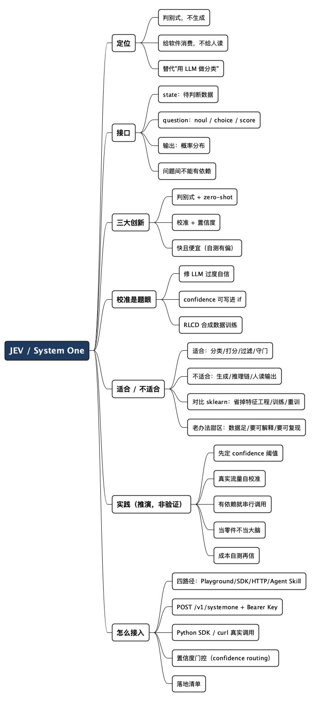

JEV：一个不会说话的 AI 模型，专门给软件当"可靠零件"
Posted on 六 17 10月 2026 in AI
| Abstract | JEV：一个不会说话的 AI 模型，专门给软件当"可靠零件" |
|---|---|
| Authors | Walter Fan |
| Category | AI |
| Status | v1.0 |
| Updated | 2026-10-17 |
| License | CC-BY-NC-ND 4.0 |
大纲
展开看看
- 反直觉的定位：全行业卷生成式大模型，JEV 是个判别式（discriminative）模型，不生成文字，只输出判断。给软件消费，不给人读。
- 它到底是什么：输入一个
state加若干个类型化的question，输出每个问题的概率分布。三种问题类型：noul（真假）、choice（无序选项）、score（有序打分）。 - 三个真正的创新点：判别式却支持 zero-shot（推理时给类别，不用专门训练）；输出自带 calibration（校准）和 confidence（置信度）；极致的快和便宜。
- "校准"为什么是关键：LLM 的通病是"一本正经地胡说"——它不知道自己不知道。JEV 的训练目标里专门惩罚过度自信。
- 它适合干什么：工作流里那些"判断类"节点——分类、路由、打分、过滤、守门。不适合要它写东西、要它推理链、问题之间有依赖。附一段从泰坦尼克号 + scikit-learn 到 JEV 的亲身对比：zero-shot 省掉的是特征工程、训练、改类别重训这三道工序。
- 成功案例与最佳实践：诚实说——目前没有公开成功案例，官方自测也承认有偏。下面这套实践是从它的类型系统和 confidence 机制里推出来的，不是抄来的。
- 怎么接入：四条路径（Playground / SDK / HTTP / Agent Skill），
POST /v1/systemone+ Bearer Key，给出 Python SDK 和 curl 的真实调用、置信度门控代码，以及接入落地清单。
写后端的人，多半都在代码里塞过这么一段逻辑：拿到一条用户消息，先判断它是不是投诉、属于哪个类别、紧不紧急，然后 if-else 分流到不同的处理分支。这几年的做法越来越一致——把这段 if-else 换成一次 LLM 调用，让大模型"读懂"消息再返回一个标签。
能用，但有三个膈应人的地方：它慢（动辄几百毫秒到几秒）、它贵（按 token 计费，判断一条消息的成本可能顶得上业务本身）、而且它会一本正经地给你一个错误答案，还显得特别自信。你没法从它的回复里看出"这次它其实拿不准"。
TypeSafe 在 2026 年 9 月放出来的 JEV，就是冲着这三件事来的。它的定位反直觉到让人想多看两眼：在所有人都卷"生成"的时候，它是个判别式模型——不生成任何文字，只对你的输入做判断，输出带概率和置信度的结构化结果，而且这个结果是给软件直接消费的，不是给人读的。 一句话概括我对它的看法：AI 不止会"生成"，它也能被打磨成软件里的一个可靠零件。这篇就讲清楚这个零件长什么样、能拧在哪儿、怎么拧。
- 它是什么：输入状态 + 类型化问题 → 输出概率分布。判别，不生成。
- 它不是什么：不是聊天机器人，不是 copilot，不写代码不写文案，你没法跟它"对话"。
一、先搞清楚它到底是什么
判别式模型（discriminative model）这个词，可能有人有点陌生。打个岔讲清楚：机器学习模型大致分两派。生成式（generative）管"造"——给个提示，它造出一段文字、一张图，GPT 那一类都是。判别式管"分"——给个输入，它判断这属于哪一类、打几分，传统的垃圾邮件分类器、图像识别都是这派。JEV 是判别派，但它带了个生成式才有的本事，这个后面说。
JEV 的接口干净得有点像一个函数签名。你给它两样东西：
- 一个
state（状态），就是待判断的那条数据。可以是字符串、JSON 对象，或者字符串数组。比如"我的卡被扣了两次款"，或者{"message": "我的卡被扣了两次款", "order_id": "A-104"}。 - 一个或多个
question（问题，官方也叫primitives）。每个问题都是多选题，只有三种类型：
| 类型 | 它问什么 | 选项 |
|---|---|---|
noul |
一个真假判断 | true / false |
choice |
这条数据属于哪一类 | 一组无序选项 |
score |
这条数据在某个刻度上落在哪 | 一组有序选项 |
它返回什么？每个问题一个离散概率分布，仅此而已。注意这一点——JEV 本体只输出概率分布。官方 API 返回里那些 choice、score、confidence 字段，都是拿概率分布套固定公式算出来的，不是模型"想"出来的。比如 choice 问题的答案就是取概率最大的那个选项（众数），score 问题的答案是按概率加权求平均。这是个很克制的设计：模型只干它最擅长的一件事——估概率，剩下的交给确定性的代码。
还有一个会在生产里咬你一口的约束：所有问题是并行回答的，问题之间不能有依赖。 它的类型系统压根不允许"B 问题的答案取决于 A 问题"。真要有依赖，官方的说法很直白——拆成两次请求，前后串起来调。别指望一次调用里搞定一条决策链。
二、三个真正的创新点
把一个新模型吹成"革命性"太容易了。咱们只看它比"用 LLM 做分类"这个现状，实打实多了哪几样东西。
第一，判别式却支持 zero-shot。 传统判别式模型最大的苦就是要针对数据专门训练——你想分十个类别，就得准备十个类别的标注数据训一遍，改需求再训一遍。JEV 不用。它在推理时才拿到类别（就是你那几个 question 的选项），靠你在调用时给的上下文现场判断。这是 GPT 那类模型才有的 zero-shot 能力，被搬到了一个判别式模型上。对工程的意义很直接：加一个新分类、改一组选项，不用重新训练、不用等数据，改调用参数就行。
第二，输出自带校准（calibration）和置信度（confidence）。 这是我觉得它最值钱的地方，单独开一节讲。先记住结论：它不只告诉你"是哪一类"，还告诉你"这个判断有多可信"，而且这个可信度是经过校准的——不是随口给的数字。
第三，快且便宜，而且不是一点半点。 TypeSafe 自己的测试里，端到端响应 70–500 毫秒，号称比前沿 LLM 快 40–200 倍、便宜 40–400 倍。
数字好看，但得打个折看。 这组数据是 TypeSafe 用自己构造的工作流测的，官方技术说明里自己承认：这些工作流是他们模型能力团队搭的，相比真实任务可能有偏。
厂商愿意在技术说明里主动写"我们这测试有偏"，这点我给个好评——但作为读者，这组倍数当参考方向可以，别当承诺。真要上，自己拿真实流量测一遍才算数。
三、为什么"校准"是这事的题眼
LLM 用久了的人都踩过同一个坑：它不知道自己不知道。 你问它一个它其实没把握的问题，它照样给你一个流畅、自信、听起来天衣无缝的答案，只不过是错的。英文叫 overconfidence，TypeSafe 给自己融的那轮种子钱，融资新闻的标题直接就是"修 AI 的过度自信问题"。
校准（calibration）是统计里一个朴素的概念：如果一个模型对一批判断都说"我有 80% 把握"，那这批判断里就应该真的有大约 80% 是对的。说 80% 却只对了一半，这模型就是过度自信，它的置信度是假的。
JEV 的训练据说就专门盯着这件事。它只用合成数据训练，用的算法 TypeSafe 叫 RLCD（Reinforcement Learning for Calibrated Decisions，为校准决策做的强化学习）。细节没公开，外界推测它的损失函数里加了专门惩罚校准偏差的项，可能用到 Brier score 这类衡量概率预测准不准的指标。
这对工程意味着什么？置信度从一个花瓶变成了一个可以写进 if 条件的开关。
# 伪代码：拿 confidence 当守门员
result = jev.ask(state=message, question=is_complaint)
if result.confidence >= 0.9:
auto_route(result.choice) # 高把握，自动分流
else:
send_to_human_review(message) # 没把握，转人工
这段逻辑之所以成立，前提就是那个 0.9 得是可信的 0.9。如果模型像没校准的 LLM 那样逢判断必说"我很确定"，那这个 if 等于没写。校准是让这种"按置信度分流"的设计从纸上谈兵变成能落地的那块基石。
四、它适合干什么，不适合干什么
一个工具的价值，一半在于你知道它能干嘛，另一半在于你知道它不能干嘛。JEV 的边界其实很清楚，因为它的类型系统已经把边界刻死了。
官方的用法是把它放进 workflow（工作流）里——说白了就是一张决策流程图，图里某些判断节点的答案由 JEV 给。它演示里甚至拿它去玩 Doom，因为玩游戏本质就是"看当前画面 → 判断该按哪个键"的连续判断。
适合：工作流里的"判断类"节点。
- 分类 / 路由：这条工单属于哪个部门、这封邮件该进哪个文件夹——典型的
choice。 - 打分 / 排序：这条内容的风险等级、这个请求的优先级——典型的
score。 - 过滤 / 守门：这段文本是不是垃圾、要不要放行——典型的
noul，而且配上 confidence 可以做前面那套"高把握自动、低把握转人工"。 - 替换规则引擎：那些写死的
if-else判断逻辑，尤其是判断条件模糊、规则老在变的，很适合换成一次 JEV 调用。
不适合：
- 要它生成任何东西。写文案、写代码、写总结——这不是它的活儿，它一个字都不吐。
- 需要推理链。问题之间不能有依赖，一次调用做不了"先判断 A，再根据 A 判断 B"。要么拆成多次串行调用，要么这活儿本来就不该给它。
- 要人读的输出。它的输出是给软件消费的概率分布，不是给人看的自然语言。
插一句我自己的老经验：从泰坦尼克号到 JEV，省掉的是什么
说"判别式 + zero-shot"有多省，光讲概念没感觉。我拿自己踩过的路对比一下就清楚了。
早些年学机器学习，入门必做的两个练手项目，一个是用泰坦尼克号乘客数据预测谁能活下来（二分类：生 / 死），另一个是鸢尾花数据集分三类花。我用的是 scikit-learn 那套经典流程——逻辑回归、决策树、随机森林轮着试。流程大同小异，而且每一步都省不掉：
- 先做特征工程。泰坦尼克号那份数据，
Age一堆空值得填，Sex这种文字得编码成 0/1，Cabin缺太多基本得扔，还得琢磨要不要从名字里抠出头衔（Mr/Mrs/Master）当新特征。模型吃的是数字矩阵，不是人话，这道工序躲不开。 - 切数据、训练。train/test 一分，
model.fit(X_train, y_train)跑一遍，才得到一个能用的分类器。 - 改需求就得重来。哪天我想把"生/死"二分类改成"头等舱生还率 / 三等舱生还率"这种新分法，或者鸢尾花想多认一种花——对不起，特征重做、模型重训。类别是训练时就焊死的。
这三道工序，正是 JEV 的 zero-shot 一刀切掉的东西。同样判断"这位乘客大概率生还还是遇难"，在 JEV 这边，state 直接塞一段自然语言——"35 岁男性，三等舱，独自登船"——question 的 criteria 里把"生还 / 遇难"写清楚，一次调用就出概率。不用填空值、不用编码、不用训练；改分类规则就改 criteria 文字，不碰任何模型。 当年我填 Age 空值、给 Sex 编码折腾的那半天，在它这儿等于不存在。
当然这不是白捡的便宜，边界得说清楚：
- 可解释性换掉了。sklearn 的随机森林能告诉我"票价和性别最影响生还"，特征重要性看得见摸得着；JEV 给你概率和置信度，但它为什么这么判，是个黑盒。
- 稳定性不一样。同一份泰坦尼克号数据，我那个训好的模型跑一百遍结果完全一致；JEV 的输出可能随版本变（官方自己也说"values can change between Jev releases"）。要可复现、要审计留痕的场景，这点得掂量。
- 数据在自己手里时，传统方案未必输。结构化、量大、分布稳定、还追求极致成本的批量分类，一个训好的 sklearn 模型推理起来又快又便宜又可控。JEV 真正的甜区是冷启动——没有标注数据、类别老变、或者输入本来就是自然语言的场合。
一句话收这段经验：JEV 不是让 sklearn 下岗，而是把"必须先有标注数据和训练"这道门槛拆了。 门槛还在的地方（数据充足、要可解释、要可复现），老办法照样香。
五、成功案例和最佳实践：先说实话
到这节，按常理该端上几个亮眼的落地案例和一套业界总结的最佳实践了。这里得跟你交底：
目前没有。
JEV 2026 年 9 月才限量早期访问放出来，到我写这篇的时候也就一个来月。公开资料里能查到的，只有它的技术规格、厂商自己的博客、以及几篇科技媒体的报道。没有第三方的生产案例，没有业界沉淀的最佳实践。 厂商自测的那组性能数字，前面说了，他们自己都承认可能有偏。
按我写东西的规矩，没有的东西我不编。所以下面这套"实践"，我标清楚是从它的技术特性推出来的，不是哪个大厂验证过的——你拿去用之前，心里得有这个数。
-
先给 confidence 定一道阈值，而不是无脑信 choice。 JEV 最大的差异化就是校准过的置信度。不用它，等于买了跑车只走市区。设计之初就把"低置信度怎么办"想清楚：转人工、走保守默认分支、还是二次确认。
-
上线前自己拿真实流量校准一遍阈值。 厂商的 0.9 不等于你业务里的 0.9。拿一批真实数据跑一遍，看它说"90% 把握"时实际对了多少，再反过来定你的阈值。这一步省不得——校准是它的卖点，但你的数据分布跟它的合成训练数据未必一致。
-
有依赖的决策，老老实实拆成串行多次调用。 别跟它的类型系统较劲。问题之间要有先后依赖，就 A 调用拿结果、代码里判断、再发 B 调用。想在一次请求里塞一条决策链，它不支持，硬塞只会得到互不相关的并行答案。
-
把它当零件，不当大脑。 它负责"判断这一下"，流程编排、兜底、重试、降级这些还是你代码的事。它快它便宜，正好适合放在热路径上高频调用——但出了判断之外的活儿，别指望它。
-
成本和延迟，自己测了再信。 40–400 倍这种数字，当方向看。真要替换现有 LLM 节点，拿你自己的 workload 测端到端，包括网络往返，再算这笔账划不划算。
一句话：
JEV 给你的是一个会估概率、还知道自己几斤几两的判断零件。 但它只是零件，可靠的系统是你用这个零件搭出来的，不是它自带的。
六、怎么接入
前面都在讲"为什么用"，这节讲"怎么拧上去"。下面的 endpoint、认证、SDK、请求响应结构都来自官方文档 docs.typesafe.ai，不是我拍脑袋。
先认清一次调用的形状：一个 state（待判断数据）+ 一组命名的 question（类型化问题）→ 每个问题返回一个结构化 answer（带概率，Choice/Score 还带 confidence）。所有问题并行、互相隔离地对同一个 state 求值，一次请求全返回。
四条接入路径
官方给了四条路，按"从试到上线"排：
| 方式 | 适合 | 入口 |
|---|---|---|
| Playground | 零代码先试，粘状态加问题看结果 | console.typesafe.ai/playground |
| SDK | 生产接入（Python / JavaScript / TypeScript），自带类型和重试 | pip install typesafe-sdk |
| HTTP API | 任意语言直接调 | POST https://api.typesafe.ai/v1/systemone |
| Agent Skill | 让 Claude Code / Codex 帮你写集成代码 | npx skills add typesafe-ai/skills --skill typesafe-ai |
第一步：拿 Key
去 console.typesafe.ai/keys 生成，存进环境变量（官方约定名 TYPESAFE_API_KEY）：
export TYPESAFE_API_KEY="your-api-key"
这是调用凭证——别写进代码、别进日志、别提交到 git。
第二步：Python SDK（最快路径）
python3 -m venv .venv
.venv/bin/pip install typesafe-sdk # 需要 Python 3.10+
一个工单路由的完整例子（官方 quickstart，一次问三个问题）：
from typesafe_sdk import Choice, Noul, Score, TypeSafeClient
ticket = "我们的 API 集成大约 20 分钟前开始每个请求都返回 500，现在完全没法处理客户订单。"
with TypeSafeClient(model="jev-latest") as client: # 自动读 TYPESAFE_API_KEY
response = client.system_one(
state=ticket,
questions={
"department": Choice(
instructions="这条工单该由哪个团队处理",
criteria={
"billing": "支付或订阅问题",
"technical": "Bug 或集成问题",
"sales": "定价或账户咨询",
},
),
"frustration": Score(
instructions="客户的不满程度",
criteria=["平静，只是陈述事实", "不满但还克制", "非常愤怒，言辞激烈"],
),
"is_urgent": Noul(instructions="这条消息传达了紧急或时间敏感性"),
},
)
print(response.choices["department"].choice) # -> "technical"
print(response.scores["frustration"].score) # -> 0.67（0–2 刻度上的加权位置）
print(response.nouls["is_urgent"].noul) # -> 紧急的概率（0–1）
三种问题类型，构造和返回字段都不一样——这张表记住就够用了：
| 类型 | 怎么构造 | 返回什么 |
|---|---|---|
Choice |
无序选项 criteria 字典 |
choice + probabilities + confidence |
Score |
有序选项 criteria 列表 |
score（加权平均）+ probabilities + confidence |
Noul |
一句真假陈述 | noul（0–1 概率，本身不带 confidence） |
第三步：不想装 SDK，直接 HTTP
curl --fail-with-body --silent --show-error \
https://api.typesafe.ai/v1/systemone \
-H "Authorization: Bearer $TYPESAFE_API_KEY" \
-H "Content-Type: application/json" \
--data-binary @- <<'JSON'
{
"model": "jev-latest",
"state": "我的卡被扣了两次款",
"questions": {
"is_billing": {
"type": "noul",
"instructions": "这条消息是不是关于计费问题"
}
}
}
JSON
响应形态（官方示例，choice 问题）：
{
"model": "jev-1.13.0",
"answers": {
"department": {
"type": "choice",
"choice": "technical",
"confidence": 1.0,
"probabilities": { "technical": 1.0, "billing": 0.0, "sales": 0.0 }
}
}
}
几个会在生产里咬你一口的约束（都来自 API reference）：
- Body 最大 32 MiB（压缩前后都算），嵌套最多 64 层，UTF-8 JSON 不带 BOM。
- 有 per-request / per-question 两个 context 上限。要更长上下文，加头
TypeSafe-Danger-Zone-Long-Context: true，两个上限升到 262k token——头名字里带Danger-Zone，就是在提醒你这不是默认该开的。 - 计费按输入 token，输出 token 免费。
接入时最该做对的一件事：置信度门控
这是官方 patterns/confidence-routing 的重点，也是 JEV 区别于"拿 LLM 做分类"的核心——answer 告诉你"是什么"，confidence 告诉你"该不该据此行动"。 第三节那段伪代码，到这里可以换成真实能跑的形态。官方的语音银行例子，不同动作按风险设不同阈值：
action = response.answers["intent"]
if action.confidence < 0.6:
route_to_support_agent(account_id) # 真的拿不准，别猜
elif action.choice == "check_balance":
show_balance(account_id) # 低风险，0.6 就够
elif action.choice == "approve_transfer":
if action.confidence > 0.85:
approve_transfer(account_id) # 高风险但高把握，自动执行
else:
ask_user_to_confirm("确认一下：您是要批准这笔转账吗？") # 高风险、中把握，先确认
else:
route_to_support_agent(account_id)
官方给的起步分法是三段：高置信度自动执行 / 中置信度谨慎（确认或复核）/ 低置信度不行动（转人工）。关键一句记死：阈值不是一个数——同一个系统里，不同动作按"做错的后果"设不同的门。 查余额错了无所谓，转账错了要命。
confidence 怎么来的：它是从概率分布的"形状"算出来的统计量，全压在一个选项上 = 1.0，摊得越平越接近 0。Choice/Score 每个答案自带，不用你算。
noul不带，真要给它一个，用离 0.5 的距离|2p − 1|。
接入落地清单
- 先在 Playground 调问题设计，再写代码。问题的
instructions和criteria写得好不好，直接决定判断质量——它没有 per-account 微调，领域知识全靠塞进state和criteria，这是你唯一能"调教"它的地方。 - 上线前拿真实流量校准阈值。官方说 confidence 校准过，但你的数据分布未必和它的合成训练数据一致，自己测一遍"它说 0.9 时实际对了多少"。
- 有依赖的决策拆成串行多次调用。并行、互不依赖是硬约束，硬塞只会得到互不相关的并行答案。
- 处理好 SDK 错误类型。SDK 有
AuthenticationError、PermissionDeniedError等，重试默认内置。 - 把它当零件：编排、兜底、降级、重试是你代码的事，它只负责"判断这一下"。
接入 JEV 的 80% 工作量不在调 API，在于把问题拆成好的
question、给每个动作定对 confidence 阈值。 API 本身一次POST就通，难的是后面这两件。
总结：AI 的下一步不只是更会说，而是更会"拿捏分寸"
过去两年，AI 的进步几乎全写在"生成"上——更会写、更会画、更会聊。JEV 提醒我们还有另一条路：让 AI 学会判断，并且诚实地知道自己的判断有几分把握。 一个不说话、只输出校准概率的小模型，听起来没有聊天机器人性感，但它可能正是软件工程真正缺的那种零件——快、便宜、可审计、知道什么时候该闭嘴转人工。
它的名字取自 19 世纪经济学家 Jevons，和他那个"杰文斯悖论"——资源用得越高效，总消耗反而越大。创始人说这名字就是在赌：当机器判断力变得足够便宜，它会被塞进你今天根本想不到的无数角落。 这个赌注成不成，还要时间来验。但方向我信——不是所有 AI 任务都需要一个会写诗的大脑，很多时候，软件只需要一个靠谱的、知道自己不知道的小判断器。
下次你准备在代码里写一个 LLM 调用只为了拿一个标签时，不妨先问自己一句：我要的是"生成"，还是其实只要一个"判断"？ 如果是后者，也许该找的不是更大的模型，而是更合身的那个零件。
全文思维导图
@startmindmap
<style>
mindmapDiagram {
node {
BackgroundColor #F8F9FA
RoundCorner 10
Padding 10
FontSize 13
}
:depth(0) {
BackgroundColor #1E3A5F
FontColor white
FontSize 18
FontStyle bold
}
:depth(1) {
FontSize 15
FontStyle bold
}
:depth(2) {
FontSize 13
}
}
</style>
* JEV / System One
** 定位
*** 判别式，不生成
*** 给软件消费，不给人读
*** 替代"用 LLM 做分类"
** 接口
*** state：待判断数据
*** question：noul / choice / score
*** 输出：概率分布
*** 问题间不能有依赖
** 三大创新
*** 判别式 + zero-shot
*** 校准 + 置信度
*** 快且便宜（自测有偏）
** 校准是题眼
*** 修 LLM 过度自信
*** confidence 可写进 if
*** RLCD 合成数据训练
** 适合 / 不适合
*** 适合：分类/打分/过滤/守门
*** 不适合：生成/推理链/人读输出
*** 对比 sklearn：省掉特征工程/训练/重训
*** 老办法甜区：数据足/要可解释/要可复现
** 实践（推演，非验证）
*** 先定 confidence 阈值
*** 真实流量自校准
*** 有依赖就串行调用
*** 当零件不当大脑
*** 成本自测再信
** 怎么接入
*** 四路径：Playground/SDK/HTTP/Agent Skill
*** POST /v1/systemone + Bearer Key
*** Python SDK / curl 真实调用
*** 置信度门控（confidence routing）
*** 落地清单
@endmindmap

本作品采用知识共享署名-非商业性使用-禁止演绎 4.0 国际许可协议进行许可。 欢迎在我的个人网站 https://www.fanyamin.com 访问原文并评论。